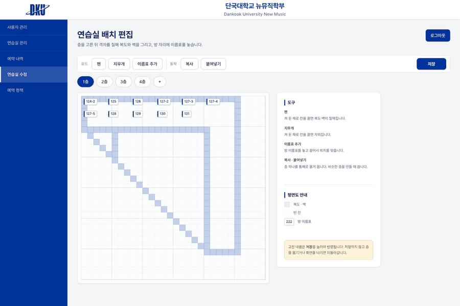
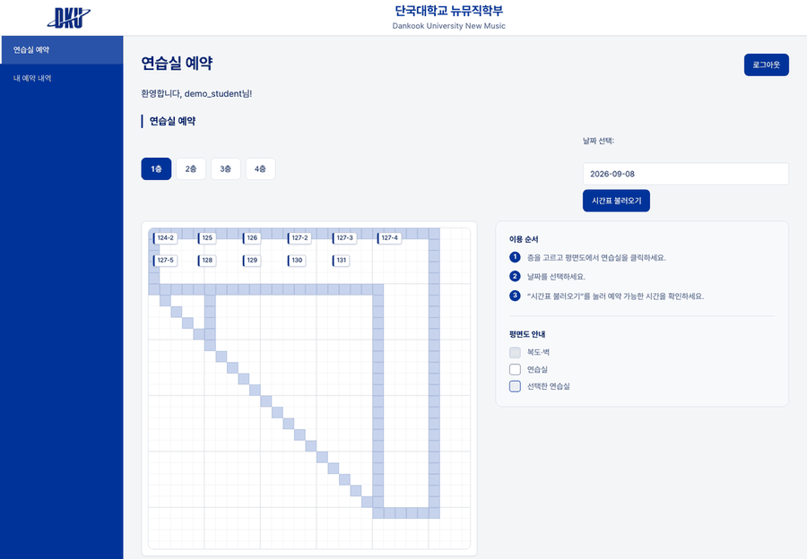
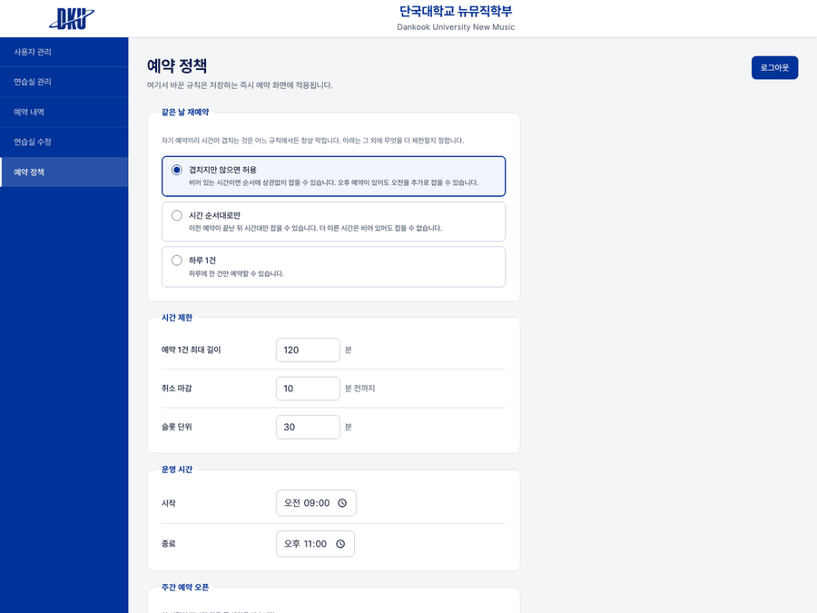
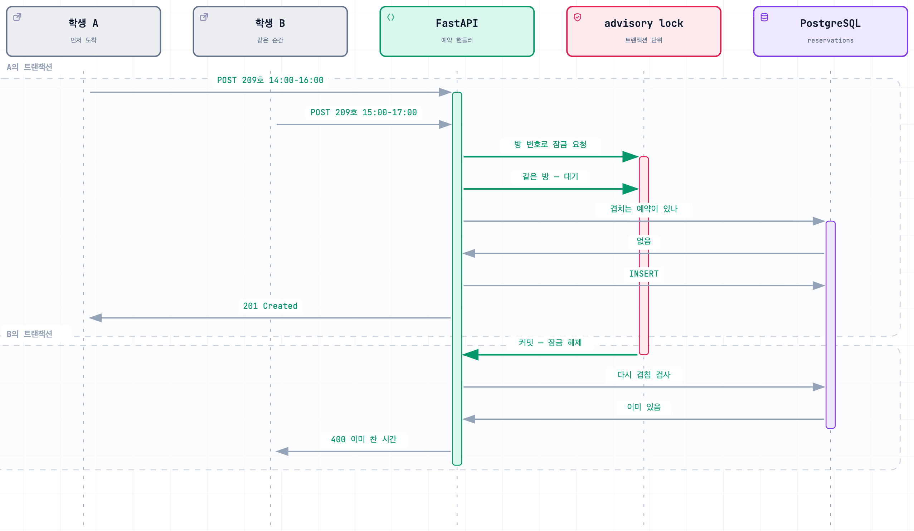

마디(Madi) — 음악학원·연습실 운영 플랫폼
단국대학교 뉴뮤직학부 연습실 예약 시스템에서 출발한 운영 플랫폼
Impact
- 평면도 위에서 예약관리자가 그린 평면도를 학생 화면이 그대로 읽음번호뿐인 연습실을 지도에서 고름
- 문서 없던 규칙 정리카페 공지를 뒤지고 학생·과대표에게 물어 정함정한 규칙은 관리자 화면에서 바꿈
- 예약 겹침 방지같은 방 1,000건 동시 요청으로 4가지 방식 비교advisory lock 채택, 저장 1건 오류 0
- 여러 기관이 쓸 수 있는 구조한 학과용 예약을 학원·학교 공용 플랫폼으로기관마다 연습실·학원 관리 기능을 골라 쓰게 함
Background
학과 연습실 예약을 카페 댓글과 구두로 하다 보니 누가 언제 쓰는지 확인할 수 없어 중복 예약과 분쟁이 반복됐습니다.
연습실은 네 개 층에 51실이고 이름이 124-2 같은 번호라, 목록만으로는 위치를 알 수 없었습니다.
어떤 예약을 거절할지 적힌 문서도 없어, 카페 공지를 뒤지고 학생과 과대표에게 물어 규칙을 정했습니다.
교수님께 제안하고 FastAPI로 직접 만들어 실험 단계까지 운영했습니다. 이 첫 버전에서는 2인 팀의 백엔드를 맡았습니다.
2026년 10월부터는 그때 정한 예약 규칙을 요구사항으로 삼아, 여러 학원과 학교가 쓸 수 있는 운영 플랫폼 「마디」를 Spring으로 혼자 새로 만들고 있습니다.
실사용자가 없어 부하와 경쟁 상황은 일부러 만들어 검증했습니다. 배포와 알림, PG 결제는 진행 중입니다.
Architecture
평면도 좌표 자체를 데이터로 뒀습니다. cells(floor, x, y)는 복도와 벽 칸, rooms.pos_x/pos_y는 방 이름표 자리입니다. 관리자가 그린 값을 학생 화면이 그대로 읽어 평면도를 그립니다.
Contributions
평면도를 이미지 대신 좌표로
평면도를 이미지로 넣으면 배치가 바뀔 때마다 개발자가 이미지와 좌표를 고쳐 다시 배포해야 합니다.
관리자가 화면에서 펜으로 복도를 긋고 이름표를 얹으면 그 값이 그대로 저장되게 했습니다.


정책 값도 데이터베이스로
최대 예약 시간, 취소 마감, 운영 시간, 매주 예약이 열리는 시점이 코드에 상수로 박혀 있었습니다.
이 값을 바꾸는 쪽은 학과 사무실이라 데이터베이스로 옮기고 관리자 화면을 붙였습니다.

업무 규칙을 데이터베이스에도
규칙을 파이썬 코드에서만 검사하고 있어서 SQL로 직접 넣으면 15시부터 13시까지 같은 예약도 들어갔습니다.
CHECK와 UNIQUE 10개, 조회용 인덱스 2개를 적용하고 다섯 경우가 차단되는 것을 확인했습니다.
Troubleshooting
겹치는 예약이 아직 없으면 잠글 행도 없음
- 문제
- 예약이 매주 금요일 9시에 열려 요청이 한 칸에 몰림. 검사 후 저장하는 순서라 같은 순간의 두 요청이 둘 다 저장됨
- 원인
- 구간이 겹치면 안 되는 범위 규칙. 예약 길이가 1~2시간이라
(room_id, start_date, start_time)유니크 제약은 09:00-11:00과 10:00-12:00을 못 막음.FOR UPDATE는 있는 행만 잠가서 겹치는 예약이 아직 없으면 잠글 대상이 없음 - 해결
- 첫 버전은
pg_advisory_xact_lock으로 방과 날짜를 잠금. 마디에서는 잠금 없이 저장,FOR UPDATE, advisory lock,EXCLUDE제약 4가지를 같은 방 1,000건 동시 요청으로 3회씩 비교

- 결과
- 첫 버전은 8명이 같은 슬롯을 동시에 요청하면 1건만 저장. 마디 비교에서 앞의 두 방식은 20건 저장,
EXCLUDE만 두면 1,000건 중 569~594건이 교착. advisory lock은 저장 1건, 오류 0, p99 약 0.8초라 채택하고EXCLUDE는 마지막 방어선으로 남김. 요청이 흩어지면 약 30% 느려지는 대가까지 ADR 0010에 기록